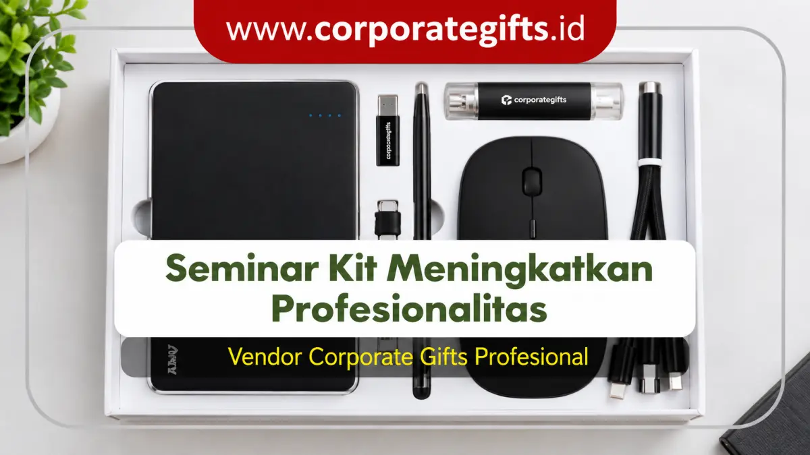

Corporate Gifts ID - Dalam setiap penyelenggaraan agenda korporat, mulai dari seminar nasional, konferensi tahunan, simposium industri, hingga lokakarya manajerial, kesan pertama (first impression) memegang pengaruh yang sangat menentukan terhadap reputasi brand. Salah satu elemen taktis yang kerap dinilai sederhana tetapi memiliki dampak psikologis luar biasa adalah penyediaan seminar kit. Paket perlengkapan kerja ini bukan sekadar cenderamata sampingan, melainkan instrumen representasi profesionalitas yang mencerminkan dedikasi, kerapian tata kelola, dan penghormatan penyelenggara terhadap setiap peserta yang hadir.
Poin Kunci Fungsi Seminar Kit Perusahaan:
- Kelancaran Teknis Acara: Membekali peserta dengan alat tulis dan buku catatan tanpa mengharuskan mereka mencari perlengkapan secara mandiri.
- Pilar Brand Authority: Mencerminkan kesiapan matang panitia pelaksana serta meningkatkan kredibilitas instansi di mata peserta dan mitra bisnis.
- Media Promosi Berkelanjutan: Menghasilkan ribuan impresi merek organik saat produk fungsional seperti tas, tumbler, atau pulpen dipakai dalam rutinitas kerja harian.
- Pengalaman Peserta (Participant Engagement): Membangun rasa dihargai yang mendorong interaksi aktif dan partisipasi penuh sepanjang sesi berlangsung.
Daftar Isi Artikel
- Apa Itu Seminar Kit dalam Ekosistem Event Perusahaan?
- 4 Fungsi Seminar Kit untuk Profesionalitas Event Perusahaan
- Matriks Komparasi Paket Seminar Kit Berdasarkan Skala Event
- Rekomendasi Item Seminar Kit Paling Bernilai Guna Tinggi
- 5 Tips Memilih Isi Seminar Kit agar Maksimal untuk Branding
- Pertanyaan Seputar Fungsi Seminar Kit Event Perusahaan (FAQ)
- Kesimpulan dan Rekomendasi Pengadaan
Apa Itu Seminar Kit dalam Ekosistem Event Perusahaan?
Secara fundamental, seminar kit adalah satu paket perlengkapan terpadu yang dirancang khusus dan dibagikan secara serentak kepada peserta seminar, simposium, workshop, konferensi, atau program pelatihan internal perusahaan. Isi dari paket ini dirancang fleksibel menyesuaikan hierarki acara, mulai dari kombinasi minimalis seperti notebook spiral dan pulpen custom, hingga paket eksekutif terlengkap yang mengintegrasikan tumbler stainless berinsulasi, flashdisk kartu materi, card holder, dan powerbank berkapasitas besar.
Dalam lanskap manajemen acara modern, seminar kit tidak lagi diperlakukan sebagai pos biaya seremonial. Sebaliknya, panitia pelaksana memandangnya sebagai instrumen komunikasi taktis yang menghadirkan tiga dampak langsung:
- Memfasilitasi Kesiapan Belajar: Memastikan audiens memiliki media fisik untuk mendokumentasikan poin-poin materi esensial secara praktis.
- Menciptakan Sentuhan Keramahan (Hospitality): Memberikan sambutan hangat sejak detik pertama peserta melakukan registrasi di meja administrasi.
- Koneksi Merek Pasca-Acara: Memperpanjang masa interaksi antara peserta dengan institusi penyelenggara hingga berbulan-bulan setelah rangkaian seminar usai.
4 Fungsi Seminar Kit untuk Profesionalitas Event Perusahaan
Menyelenggarakan event korporat tanpa perencanaan cinderamata yang matang sering kali menyisakan persepsi kurang terorganisir. Berikut empat fungsi esensial seminar kit yang secara signifikan mengangkat standar profesionalitas event Anda:
1. Mendukung Kelancaran dan Kesiapan Teknis Peserta
Di tengah padatnya agenda diskusi dan pemaparan narasumber, tidak semua peserta membawa perlengkapan tulis mandiri. Kehadiran notebook berkualitas prima dan pulpen bertinta lancar membebaskan peserta dari kendala teknis. Aktivitas pencatatan materi menjadi lebih tertib dan fokus audiens tidak terpecah untuk mencari pinjaman alat tulis kepada rekan di sebelahnya.
2. Menegaskan Kredibilitas dan Brand Authority Penyelenggara
Sebuah acara yang menyuguhkan paket perlengkapan serasi, dikemas rapi dalam tas jinjing custom beridentitas visual tegas, secara instan memancarkan sinyal bahwa penyelenggara mengelola kegiatan dengan standar manajemen tinggi. Perhatian terhadap detail kemasan dan kualitas material produk mencerminkan komitmen instansi terhadap keunggulan dan integritas layanan.
3. Menjadi Media Promosi Jangka Panjang Berbiaya Efisien
Berbeda dengan spanduk, backdrop, atau brosur kertas yang rentan dibuang setelah acara selesai, produk dalam paket seminar kit memiliki siklus pakai berkelanjutan. Tote bag kanvas digunakan untuk berbelanja, tumbler menemani aktivitas di meja kantor, dan buku agenda terus dipakai mencatat risalah rapat. Pola pemakaian harian ini menghasilkan eksposur merek berulang (repetitive brand impressions) dengan biaya per impresi (Cost per Impression / CPI) yang sangat rendah.
4. Mengoptimalkan Keterlibatan (Engagement) dan Kepuasan Peserta
Pemberian paket cenderamata eksklusif memicu respon psikologis positif berupa rasa dihargai. Peserta merasa kedatangan mereka diperhatikan sungguh-sungguh oleh pihak manajemen perusahaan. Dampaknya, peserta menjadi lebih termotivasi untuk aktif berpartisipasi dalam sesi tanya jawab, mengisi kuesioner evaluasi acara, dan memberikan testimoni positif di media sosial profesional seperti LinkedIn.

Kombinasi notebook hardcover, pulpen metal, tumbler vakum, dan pouch custom mencerminkan kesiapan matang panitia event korporat.
Matriks Komparasi Paket Seminar Kit Berdasarkan Skala Event
Agar alokasi anggaran pengadaan berjalan proporsional dan tidak terjadi pemborosan dana operasional, panitia pelaksana perlu mengelompokkan komposisi seminar kit sesuai profil peserta dan skala acara. Tabel komparatif berikut merangkum matriks kurasi paket perlengkapan yang lazim diterapkan oleh instansi B2B terkemuka:
| Skala & Jenis Event | Komposisi Item Rekomendasi | Perkiraan Anggaran | Target Dampak Citra |
|---|---|---|---|
| Seminar Massal / Kuliah Umum | Tas spunbond sablon, notebook spiral softcover A5, pulpen plastik retractable, lanyard satin sablon, pin bros peniti. | Rp 25.000 - Rp 45.000 / pax | Fungsional, tertib, dan hemat biaya untuk audiens skala besar. |
| Workshop / Pelatihan Teknis | Tote bag kanvas blacu 12 oz, notebook hardcover jilid lem, pulpen metal stylus, flashdisk kartu 16GB, tumbler plastik BPA-free. | Rp 65.000 - Rp 110.000 / pax | Praktis, tahan lama, dan menunjang penyimpanan modul digital. |
| Konferensi B2B / Summit Nasional | Pouch laptop antiair / tas ransel semi-kulit, agenda kerja binder magnetik, pulpen metal grafir nama, tumbler stainless SUS304 vakum. | Rp 135.000 - Rp 230.000 / pax | Elegan, bernilai prestisius tinggi, dan memperkuat relasi kemitraan strategis. |
| Forum Eksekutif / Round Table VVIP | Leather organizer map dokumen, executive pen set box beludru, smart tumbler LED sensor suhu, powerbank wireless PD 10.000 mAh. | Rp 275.000 - Rp 500.000+ / pax | Eksklusif, mencerminkan penghormatan VVIP dan kemewahan korporat. |
Rekomendasi Item Seminar Kit Paling Bernilai Guna Tinggi
Memilih produk untuk seminar kit tidak boleh sekadar mengedepankan harga termurah. Jika barang yang diberikan berkualitas rendah dan cepat rusak, hal tersebut justru dapat merusak reputasi perusahaan. Berikut beberapa produk esensial yang terbukti disukai peserta:
- Tote Bag Kanvas / Pouch Ramah Lingkungan: Berfungsi sebagai wadah praktis seluruh materi selama acara berlangsung, sekaligus menggantikan tas belanja plastik sekali pakai pasca-event.
- Buku Agenda Eksklusif: Buku berdesain elegan dengan sampul kulit sintetis atau hardcover minimalis memberikan kepuasan tersendiri bagi profesional yang gemar mencatat ide-ide bisnis.
- Pulpen Metal Grafir Logo: Memiliki bobot mantap dan tampilan mewah. Menggunakan teknik grafir laser presisi membuat identitas instansi terlihat bersih, tahan gores, dan tidak luntur.
- Tumbler Stainless Steel SUS304: Mendorong gaya hidup ramah lingkungan sekaligus mendukung program keberlanjutan (sustainability ESG) perusahaan Anda.
- Flashdisk Kartu Custom: Media efektif untuk mendistribusikan e-book materi pelatihan, profil video perusahaan, dan sertifikat digital secara efisien tanpa boros kertas.
5 Tips Memilih Isi Seminar Kit agar Maksimal untuk Branding
Agar investasi pengadaan seminar kit menghasilkan dampak maksimal terhadap penguatan citra merek, tim pengadaan disarankan menerapkan lima pedoman taktis berikut:
- Pahami Profil Demografi dan Kebutuhan Audiens: Sesuaikan karakteristik produk dengan rentang usia, jabatan pekerjaan, serta kebiasaan harian audiens sasaran Anda.
- Prioritaskan Kegunaan Nyata (High Usability): Pilih item yang relevan untuk dibawa bekerja di kantor atau digunakan dalam mobilitas sehari-hari agar visibilitas merek terus berjalan.
- Terapkan Penempatan Logo Proporsional: Hindari mencetak logo perusahaan berukuran terlampau mencolok yang justru mengurangi estetika barang. Sentuhan grafir monokrom atau emboss subtil justru memancarkan kesan lebih mewah.
- Lakukan Validasi Sampel Fisik (Proofing Sample): Selalu minta vendor mencetak sampel contoh sebelum produksi massal dilakukan guna memverifikasi ketajaman warna cetak, kerapian jahitan, dan fungsi mekanis produk.
- Pilih Vendor Souvenir dengan Legalitas Lengkap: Pastikan penyedia jasa memiliki rekam jejak B2B terpercaya, sanggup menerbitkan faktur pajak resmi (PPN/PPh), serta memberikan jaminan garansi penggantian barang cacat produksi.
Pertanyaan Seputar Fungsi Seminar Kit Event Perusahaan (FAQ)
Kesimpulan dan Rekomendasi Pengadaan
Fungsi seminar kit dalam event perusahaan terbukti melampaui peran sekadar bingkisan formalitas. Seminar kit adalah cerminan keseriusan panitia dalam merancang pengalaman belajar terbaik bagi peserta, pilar penegak kredibilitas institusi, serta media promosi taktis yang terus bekerja lama setelah acara dibubarkan.
Dengan melakukan kurasi item yang fungsional, menyematkan identitas visual secara elegan, dan berkolaborasi bersama mitra manufaktur berpengalaman, acara korporat Anda akan meninggalkan impresi positif yang kuat, profesional, dan berkesan mendalam bagi seluruh tamu undangan.

Ditulis oleh: Arinda Zakia
Senior Corporate Gifting SpecialistSpesialis strategi merchandise B2B dan kurator paket seminar kit korporat di CorporateGifts.ID. Berpengalaman mendesain konsep cenderamata fungsional untuk ratusan agenda instansi BUMN, kementerian, dan perusahaan multinasional.
Lihat Profil Lengkap & Panduan Lainnya